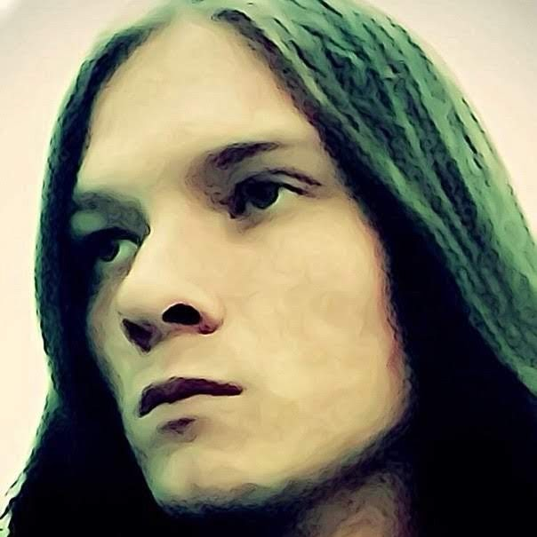

I spent the whole 2021 working and paying for my credits. And on the 30th of December, 2021 I finally did it. I fully paid the credit for my car, I closed my credit card, and I fully paid my second credit that I took to use in my hardest times of 2020.
I hated the city, but I liked my company. My boss was speaking with me not like a leader, but like a part of one family, my colleagues were young and interesting people, and when we had any disagreements, we did not quarrel, but we discussed them and made a correct decision. Working as a technical writer, I fully updated the documentation website for the company, and moved it to a git repository. It looks like the company liked me and my work, too. So I decided to work for them for a longer period, and I’m working for them even now when I write this post.
As my company liked my performance, they allowed me to work remotely, even though they were against it at the beginning. I like the remote work more, because there are a lot of people in the office who disturb me, and at home there’s always silence and I can do more work in less time. So, in the beginning of 2022 I started working remotely, and visiting my office very seldom.
As I paid all my debts, I started saving money. I’ve already told you that I never had an own place to live and always rented, so I thought maybe I could save for an initial payment for a mortgage, and buy a small flat in Saint Petersburg, or maybe even abroad. And as always, I chose stocks as my savings account.
And then, our stupid government started a full-scale invasion in the Ukraine.
Russians are not allowed to say what they think about the war. The police is checking random citizens’ phones on the streets. An old lady in Saint Petersburg was arrested for a “peace” sign on her purse. And thousands of people are getting arrested every day for saying or even hinting that they don’t support the war.
I can’t say much about what I think about the war, because I don’t want to break the Russian laws which appeared in 2022. I just can’t believe that this is happening in 21st century. I feel incredibly sorry for all the poor Ukrainians and what they have to bear right now. I feel sorry for all the Russian soldiers who are sent to the war against their will. And i grieve for every lost and damaged life on both Russian and Ukrainian side.
I hope this will end very soon.
When the war started, I immediately lost 70% of my savings that I kept in stocks. Russian economy crashed. Many brands, including automobile brands, left Russia. The prices skyrocketed, and many of my investment funds became blocked by Russian government.
I just don’t understand, why everything in this world is preventing me to have an own place in it. A small flat, or a house… I hope that my savings will be unblocked one day, I still keep saving for initial payment for a mortgage. But I absolutely do not know what will happen next.
I just hope for the best and continue living in this alien world. I hope all the wars end soon, I hope I will be able to get a mortgage in Saint Petersburg, I hope that one day I could travel and see this world.
I haven’t posted anything here for almost three years, and I think no one even reads this, but since it’s a kind of my diary, I want to share what was happening with me for the last years.
Before the pandemic started and I was still waiting and hoping for my working visa, a friend of mine, Milton Wache invited me to visit his place in Värnamo, Sweden. I made a tourist visa successfully, they allowed me to visit Sweden for 8 days. So I packed a small bag of my belongings and went there.
I have never seen a country so beautiful as Sweden. When I first arrived, I thought, “where is all the litter on the streets?”, it was so clean comparing to Russia. I liked Stockholm so much, it’s a very beautiful city. Then I went to the small city of Värnamo, where my friend lived, and enjoyed my stay there. The people in Sweden are very friendly, even strangers, the cities and towns are very clean and cozy, and the nature is mesmerizing.
Yes, I tasted Surströmming. :) We opened it underwater, and the smell was disgusting. It smelt like a super strong fart, and Milton’s friends who were there, wanted to puke. But when we tasted it, it was not so bad, it was like a very-very salt fish. People eat it with potatoes and bread and it’s not so bad. Anyway, that was an experience.
When I returned back to Russia, I decided to buy a car. I’ve always wanted it, so I bought a 2017 Hyundai Solaris (which is known in other countries as Hyundai Accent 5th gen), and started driving anywhere in my free time. Honestly, driving is very relaxing to me, and it makes me see things: cities, villages, nature etc. I travelled to the forests to walk there, to other cities to meet my relatives and so on.
And then the pandemic started. No, I didn’t get a COVID-19, and I didn’t even vaccinate, because they did not give an option to choose non-russian vaccines, like Pfizer. But I avoided people and worked remotely, so dodging the virus was not hard for me.
Remember I signed a contract with a company in Brno and tried to relocate to Czech Republic? I told you that I had spent more €1000 on papers and stuff and just waited. So, I waited about 2 years and then got an email, that my working visa request was declined without explaining any reason. I googled it and found out that all the working visas are getting declined recently due to the COVID-19 pandemic. Cool. *sarcasm*
I’ve lost my job due to the pandemic and could not find a new one for some time. I started using my credit card to live, getting more and more in debt, and then there were some unpleasant events, like health problems, which made my debt even bigger.
I was looking for a job everywhere, and found one in Moscow, and I agreed on it. Actually, I hate Moscow, it’s big, it’s dirty, most people are too selfish and shitty, and the city is hard to live in. But salaries in Moscow are twice bigger than in any other part of Russia, and I had unpaid credits for my car and for my credit card.
So I end up in the most hateful city of my country, but with a nice job, which I honestly liked. And my life became the same routine I got used to: work and home.
I called this post Lifelover. It sounds contradictory, but let me explain. Lifelover is a Swedish band, one of my favorite ones. In spite of the band name, they were a Depressive Suicidal Black Metal band and their frontman Jonas Bergqvist committed suicide. It’s all contradictory as my whole life.
Now let me say what I wanted to say.
I am tired of this life. I hate it. I don’t understand it. And I have absolutely no one to share my thoughts.
All I have to do in this life is to work. Constantly work and that’s it, always be sleepy and tired, and for one reason: just to pay rent and have some warm place to sleep, not to live on the streets.
I’ve never had my own place to live. I always rented rooms or flats or lived in dorms, but I always had to pay for it. There was some time when I lived and slept on the city streets but I don’t want even to remember these times. I am dreaming about my own home. I dream about a small house in the mountains, somewhere in Switzerland or the Netherlands or anywhere in the EU, just to live quietly and safely.
I never had real friends. Actually, I don’t need them much, I am not very social, but there are some people that mean much for me. And what do you think? Yep, these people ignore me. We communicate very seldom, and this makes me even sadder. I dream of the times when I can send a message and get an answer. I even don’t ask for meeting in real life.
And I always wanted to travel. I’ve already told much about it. I can travel alone, by a car, this would be perfect for me. I enjoy seeing some new places, I can take pictures and share with you all, and I think if I make it and relocate to the EU, I will find some time like weekends to do this.
Yes, I have these dreams. And they are hard to achieve, but I will try. I don’t know if I achieve them but I will try very hard. And for now, I think I just need to work and hate this period of my life.
If you have read my previous posts about myself and my personality, you can easily guess what I mean by the word “escape”. I want to escape the country where I was born and that really drives me insane. I hate everything about it, its stupidity, its people, it’s politics, the dirt on the streets and in people’s minds. But as I told you before, the thing I hate most is that it makes it harder to travel and see the world.
I’ve made a small research about how I can relocate to any of the EU countries. The easiest way, of course, is to invest in some country’s economics, and I would be glad to do this, but I am not that wealthy. Russia makes it harder to make money, especially if you grow up alone and does not have any own place to live. I work since I was 13 and spend most part of what I earn to rent a room or a flat or a dorm, whatever. I wanted to get a higher education but I could not study and work at the same time and finally didn’t have enough money to finish University. This all is the reason I can’t even save a really high amount of money to invest in EU countries.
So, the only variant left for me is to start the longest way of escaping from my country. To find a job in the EU and live because of working visa, be hardworking to be promoted and noticed and save money either to invest in EU economics or to buy my own house and hope that one day I can be eligible to become a European and burn my Russian passport to hell and never return here.
I was looking for a job in the EU and finally, after some time I was offered a contract in a Czech company, located in Brno. The contract was signed in September 2018 and I started the process of getting a working card in the Czech embassy.
First of all, I was not prepared that it would take this much time and money. I needed to get all kinds of documents from the Russian government, which is slow af, I needed to translate the documents to the Czech language and it took several times to correct everything that was not translated the correct way, everything is paid of course. I needed to book a place to live in Brno, CZ and provide a document proving this to the embassy, which also cost much, and the €200 fee for the visa was not even half of what I spend on the documents before.
Besides money, it really took a long time. I started the process in September 2018 as I said but the Czech embassy could receive my documents only in August 2019. First time they could invite me was actually April 2019, and I had everything but could not pay the fee. They were accepting cash only, and I don’t remember when I used cash, I pay by card only for a really long time. So I needed to withdraw cash and next time they allowed me to come was August. They accepted all my papers and fees and told to wait about 2 months, and promised to contact me by email.
About 4 months passed since that. I am checking my email and the embassy’s website every day, still no answer. Ok ok, I will wait for more. I can’t wait for the day to start my new life, a long and probably hard process to live my life like I want and spend my life traveling and sharing my experience with nice people.
I hope one day you will see pictures of nice places here and enjoy them with me.
I don’t want to stay in the country I was born in. I feel like an alien here.
The only good friends I have in my life and communicate with are mostly from the Netherlands. I found them while playing World of Warcraft, the best ever guild I ever played with, it’s called Oasis. We do not play at the moment but we are still communicating in Discord. I would like to thank them for being the most lovely community I’ve ever seen. Thanks Yetaa, Minxe, Ebons, Xeike, Skriem, Wall, Larvact, Dioda, Quvix, Beethoven, Crob, Mokhei, Saniig and all the others who had fun with me, you are my only real friends, my real family.
However, I don’t understand Russian mentality. I can’t make friends here. People call me a traitor for making friends with the EU guys and for wanting to relocate to the EU one day. People say I should be a patriot of the country where I was born.
People are not the only issue. I don’t understand Russian politics. None of the Russians wanted a c onflict with the Ukraine. But our countries are officially at war for some politic reasons I don’t even want to know. This all makes it harder to travel to see the Ukraine, they just don’t let you pass the border. They make it obligatory to go to the army and fight for what you don’t support. And yes, you pay taxes and see nothing in return, police do not want to help people, you get poor quality medicine, the roads are in bad condition and dirt is everywhere; I can say a lot but I won’t.
Next comes the main reason I want to relocate to the EU. Russia makes it harder to travel. You need a visa to go almost everywhere, as far as I know, you could go with just a Russian passport only to go to the Ukraine and to Belarus, but now it’s limited to Belarus only. To make a visa you need to spend a lot of time and money and just to be allowed to go abroad for a week. To get a permit to work abroad you need to spend really a lot of money and more than a year and still, get no result.
But what helps me to live is hope. I hope that one day I will make it. One day I will break the chains and relocate to one of the EU countries and will be free to travel anywhere and make more colorful posts with pictures here. I will just put some more effort and see what will happen.
Just a person who wants to see the world. My name is Avicus Louis Delacroix, but you can call me Avi.
I am just a person, open-minded and willing to learn and see something new in my life. I am just a person who wants to see the world.
I was born in Russia but my nationality is a real mess, there are people from different countries, so I think that I don’t belong to any exact nationality at all. I grew up alone and anti-social, always depressed and with a strange fear of society. I enjoyed reading, books, music, and nature. I could spend a lot of time alone with any of these things.
When I started University, I started socializing. I won’t say that I got any friends but I overcame the fear of people. I was dying my hair black and was playing in metal or goth bands, singing, drumming, playing guitars and piano, I was studying English-Japanese interpretation, I was studying at daytimes and working overnights to pay for my life. But hard times had come and I had to leave the University after studying for 4 years already because I didn’t have money to pay for it. I left it and started working for my life, mostly in IT companies.
My life became a boring routine, I am not dying my hair black anymore, I prefer folk and classical music instead of metal and goth bands of my childhood, I learned to play flute, hurdy-gurdy, mandola, but this never-ending work for life has become my curse. For a long time and different reasons, I lived with the only thought: to commit suicide. To join the 27 club, whatever.
But I could not do this. Either I was too weak to do this, or something like the hope for better times has stopped me. I always wanted to see the world, different countries, maybe even gather some good friends. At this moment of life, I am working on this. Something that will change my life greatly.